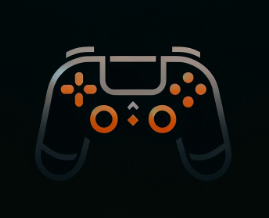

GameHub
PACMAN
Press ENTER to start
Use WASD to move
1. You are the pacman with color yellow.
2. Move Pacman using arrow keys.
3. Stay away from the colored ghosts. If your pacman comes in contact with colored ghost, the game ends
4. Cover the green balls
Score:
0
GAME OVER!
YOU WON!